RECURSOS · INTRODUCCIÓN A HTML
Línea cronológica: de las fichas a la web
Mucho antes de la primera página web hubo personas que imaginaron reunir y enlazar todo el conocimiento. Este recorrido va del Mundaneum de 1910 al HTML que usamos hoy.
- 1910
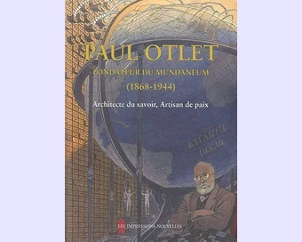
Comienzo
Paul Otlet (bibliógrafo belga) y Henri La Fontaine (jurista belga, Nobel de la Paz en 1913) proyectan una «ciudad del conocimiento» para reunir todo el saber del mundo en millones de fichas clasificadas: el Mundaneum.
- 1934
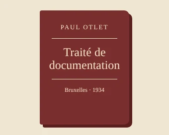
La red imaginada
En el Traité de documentation, Otlet imagina consultar documentos a distancia desde pantallas conectadas a un gran centro de información. Ese mismo año cierra el Mundaneum.
- 1945
Segundo hito histórico
Vannevar Bush, ingeniero estadounidense, director de la Oficina de Investigación Científica y Desarrollo (OSRD) durante la Segunda Guerra Mundial y principal impulsor político y organizador del Proyecto Manhattan, publica «As We May Think». Describe el Memex, un escritorio para guardar documentos y unirlos por asociación de ideas. Nunca se construyó, pero inspiró a quienes crearon el hipertexto.
- 1963
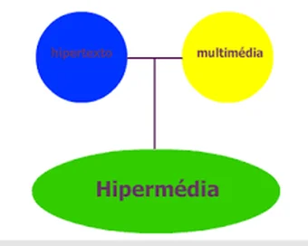
Términos
Ted Nelson acuña las palabras hipertexto e hipermedia (las publica en 1965). Desde 1960 trabajaba en el Proyecto Xanadú, una red de documentos enlazados.
- 1969
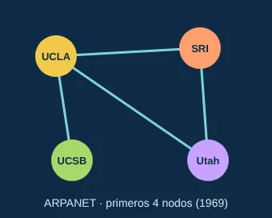
La red de redes
Se conectan por primera vez computadoras de universidades de Estados Unidos en ARPANET, la red que dará origen a Internet. La web llegará después, montada sobre Internet.
- 1989
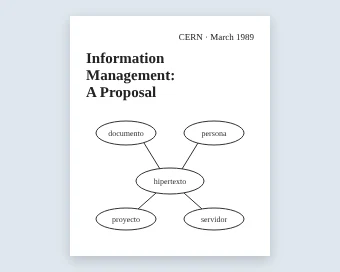
La propuesta
En marzo, Tim Berners-Lee, que trabajaba en el CERN (Suiza), escribe «Information Management: A Proposal»: un sistema para enlazar documentos guardados en distintas computadoras.
- 1990
WEB
En noviembre, Berners-Lee y Robert Cailliau presentan la propuesta formal «WorldWideWeb». Antes de fin de año ya funcionan en el CERN el primer navegador-editor, el primer servidor y el primer sitio web: info.cern.ch.
- 1991
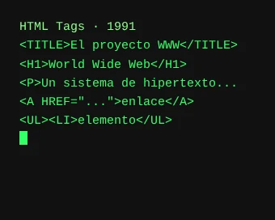
La web sale del CERN
En agosto, Berners-Lee anuncia el software de la web en Internet. En octubre aparece «HTML Tags», la primera descripción pública de HTML: apenas 18 etiquetas.
- 1993
Libre para todos
El 30 de abril, el CERN pone la web en el dominio público: cualquiera puede usarla sin pagar. Ese año se lanza Mosaic, el primer navegador que se hizo popular.
- 1994
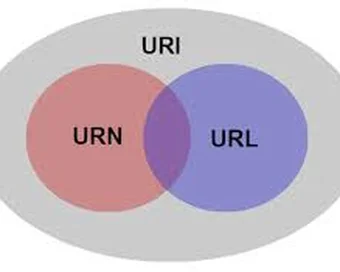
El consorcio y las URL
En octubre, Berners-Lee funda el W3C, el consorcio que coordina los estándares de la web. En diciembre se publica el RFC 1738, que define formalmente la estructura de las URL.
- 1995
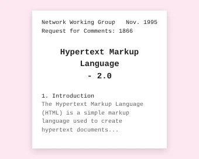
HTML 2.0
En noviembre se publica el RFC 1866, «HTML 2.0»: la primera especificación formal del lenguaje, pensada como norma que todos debían seguir.
- 1997
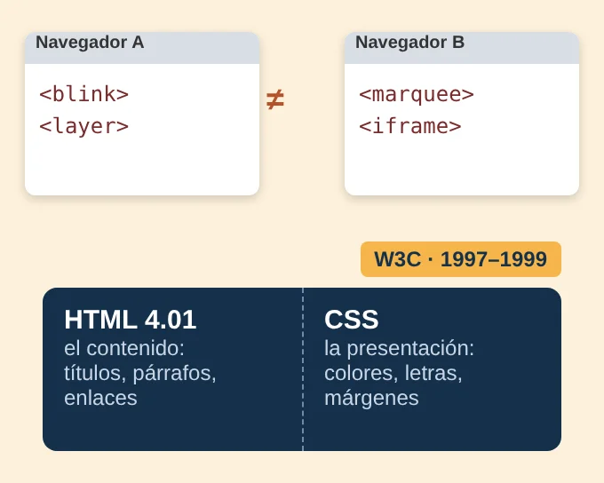
Guerra de navegadores y HTML 4
Netscape e Internet Explorer inventan etiquetas propias y una misma página se ve distinta en cada navegador. Para ordenar la web, el W3C publica HTML 3.2 y HTML 4.0 en 1997, y HTML 4.01 en 1999: el HTML queda para el contenido y la apariencia pasa a las hojas de estilo CSS.
- 2004
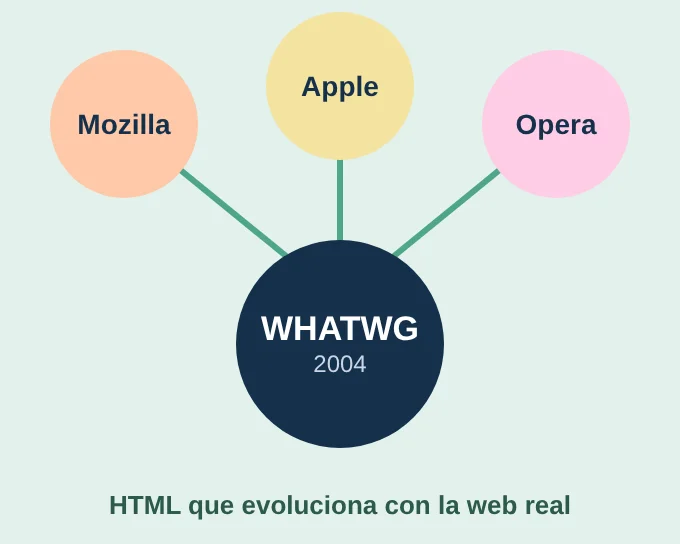
La rebelión del estándar
El W3C apuesta por el XHTML, más estricto y poco compatible con las páginas existentes. En respuesta, Mozilla, Apple y Opera fundan el WHATWG para que HTML evolucione de forma práctica, junto con la web real. De ese trabajo nacerá HTML5.
- 2012
Nuevos nombres
La ICANN recibe 1.930 solicitudes para crear nuevos dominios de primer nivel, como .app, .blog o .shop. Los primeros empiezan a funcionar en octubre de 2013.
- 2014
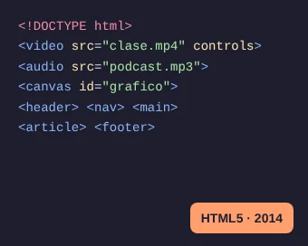
HTML5
El 28 de octubre, el W3C publica HTML5 como recomendación oficial: audio, video y gráficos directamente en la página, sin complementos.
- 2019
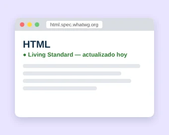
Un estándar vivo
El W3C y el WHATWG acuerdan mantener una sola versión de HTML, que se actualiza de forma continua: el «HTML Living Standard».
Basada en la infografía original de Ruben Leal para el curso de Introducción a HTML, revisada y ampliada. Las ilustraciones de 1934, 1969, 1989, 1991, 1995, 1997, 2004, 2014 y 2019 son dibujos hechos para esta página. Fuentes: CERN, W3C, WHATWG, ICANN, RFC Editor, Mundaneum y Encyclopaedia Britannica. Si te interesa la historia local, leé La construcción del Uruguay digital.